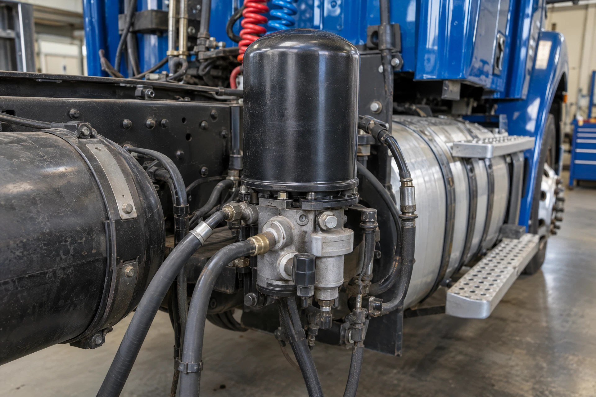

Air & brakes: Illustrative system photography—not a location, fitment, or repair-procedure reference.
💨 AIR BRAKE DIAGNOSTICS
Air & brakes: how the pieces connect
Stored compressed air supports brake operation.
- 1
Build air
The compressor supplies air; the dryer helps manage moisture.
- 2
Store + control
Reservoirs store air and valves direct it.
- 3
Brake action
Chambers convert air pressure into mechanical action. Spring brakes have a separate parking/emergency function.
First separate slow pressure build, air loss and poor braking. Brake or low-air warnings require stopping safely and qualified service.
Background reference: Air brake handbook: system components. Use the manual for your specific equipment for service instructions.
Which symptom matches your truck?
See how all truck systems connectFind manufacturer service information
Choose the exact complaint before choosing an air-system or foundation-brake part.
👀 DON'T KNOW THE PART? SEE THE AIR BRAKE PARTS VISUAL GUIDE →